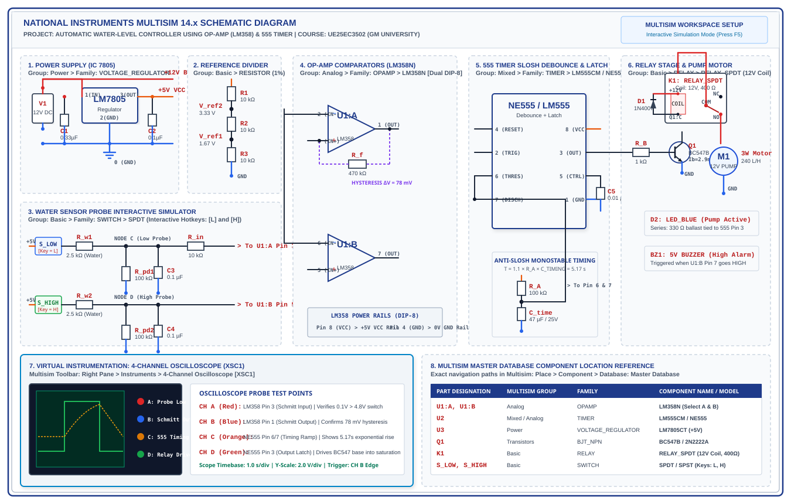

Automatic Water-Level Controller Using Op-Amp (LM358) and 555 Timer | Course: UE25EC3502 (LIC with Practice)
The vector schematic diagram below details all 6 functional blocks with Multisim reference designators, pin assignments, node numbers, and virtual oscilloscope / multimeter test connections.

Use shortcut Ctrl + W or click Place > Component. Ensure database is set to Master Database.
| Designator | Component Name | Database Group | Family | Component Model | Value / Note |
|---|---|---|---|---|---|
V1 |
DC Power Source | Sources | POWER_SOURCES | DC_POWER | 12.0 V |
GND |
Ground Reference | Sources | POWER_SOURCES | GROUND | 0 V (Required for SPICE) |
U3 |
Voltage Regulator | Power | VOLTAGE_REGULATOR | LM7805CT | +5.0 V Output |
U1:A, U1:B |
Dual Op-Amp | Analog | OPAMP | LM358N | Sections A & B (Pin 8=5V, Pin 4=0V) |
U2 |
Precision Timer | Mixed / Analog | TIMER | LM555CM / NE555 | 8-Pin DIP Package |
Q1 |
Driver Transistor | Transistors | BJT_NPN | BC547B / 2N2222A | Ib > 2.5 mA Saturation |
D1 |
Flyback Diode | Diodes | DIODE | 1N4007 | 1000V, 1A Reverse Clamp |
K1 |
Power Relay | Basic | RELAY | RELAY_SPDT | 12V Coil, 400 Ω |
M1 |
DC Pump Motor | Electro-Mechanical | MOTORS | DC_MOTOR (or LAMP) | 12V DC, 3W Load |
S_LOW, S_HIGH |
Water Level Probes | Basic | SWITCH | SPDT / SPST | Keys: L and H |
R1, R2, R3 |
Reference Divider | Basic | RESISTOR | 10k (1%) | 1.67V & 3.33V Setpoints |
Rw1, Rw2 |
Water Conductivity | Basic | RESISTOR | 2.5k | Tap water ionic conduction |
Rpd1, Rpd2 |
Pull-Down Resistors | Basic | RESISTOR | 100k | Microampere current limit |
Rin, Rf |
Schmitt Hysteresis | Basic | RESISTOR | 10k / 470k | Hysteresis ΔV = 78.1 mV |
RA, C_time |
555 Timing Network | Basic | RESISTOR / CAP_ELECT | 100k / 47uF | Debounce T = 5.17 seconds |
| Origin Terminal | Destination Terminal | Wire Color |
|---|---|---|
V1 (+) [12V] | U3 Pin 1 (IN) & Relay Coil | Red (+12V) |
V1 (-) [0V] | GROUND (0V) | Blue (GND) |
U3 Pin 3 (OUT) | LM358 Pin 8, 555 Pin 8, R1 top | Orange (+5V) |
Divider Node A (R1-R2) | LM358 Pin 6 (2IN-) | Purple (3.33V) |
Divider Node B (R2-R3) | LM358 Pin 2 (1IN-) | Blue (1.67V) |
S_LOW Output > Rw1 | LM358 Pin 3 (1IN+) via Rin | Cyan |
S_HIGH Output > Rw2 | LM358 Pin 5 (2IN+) direct | Green |
| Origin Terminal | Destination Terminal | Wire Color |
|---|---|---|
LM358 Pin 1 (1OUT) | Rf (470k) > Pin 3 & 555 Pin 2 | Purple (Trig) |
LM358 Pin 7 (2OUT) | 555 Pin 4 (RESET) & Buzzer | Gray (Reset) |
555 Pin 6 & 7 | Node between RA (100k) & C_time (47u) | Brown (RC) |
555 Pin 5 (CTRL) | 0.01 μF Capacitor > GND | Yellow |
555 Pin 3 (OUT) | RB (1k) > BC547 Base | Cyan |
BC547 Collector | Relay Coil Pin A2 & 1N4007 Anode | Dark Blue |
Relay NO Contact | DC Motor Pump (+) Lead | Red (+12V) |
+12V bus and its anode to the BC547 Collector. If placed backwards, it will short-circuit the 12V supply to ground during transistor conduction.
Press F5 to run the simulation, then toggle the switches on your keyboard to observe the 4 tank operating states:
| Cycle Step | Tank Water Level | S_LOW L | S_HIGH H | LM358 Pin 1 (Low) | LM358 Pin 7 (High) | 555 Pin 3 | Relay Status | Pump Motor |
|---|---|---|---|---|---|---|---|---|
| 1 | Tank Empty (Below Low Probe) | OPEN | OPEN | LOW (~0.05V) | LOW (~0.05V) | HIGH (~3.6V) | ENERGIZED | RUNNING (ON) |
| 2 | Tank Filling (Between Low & High) | CLOSED | OPEN | HIGH (~3.8V) | LOW (~0.05V) | HIGH (Latched) | ENERGIZED | RUNNING (ON) |
| 3 | Tank Full (Touches High Probe) | CLOSED | CLOSED | HIGH (~3.8V) | HIGH (~3.8V) | LOW (~0.1V) | DE-ENERGIZED | STOPPED (OFF) |
| 4 | Tank Draining (Water Level Falling) | CLOSED | OPEN | HIGH (~3.8V) | LOW (~0.05V) | LOW (Latched) | DE-ENERGIZED | STOPPED (OFF) |